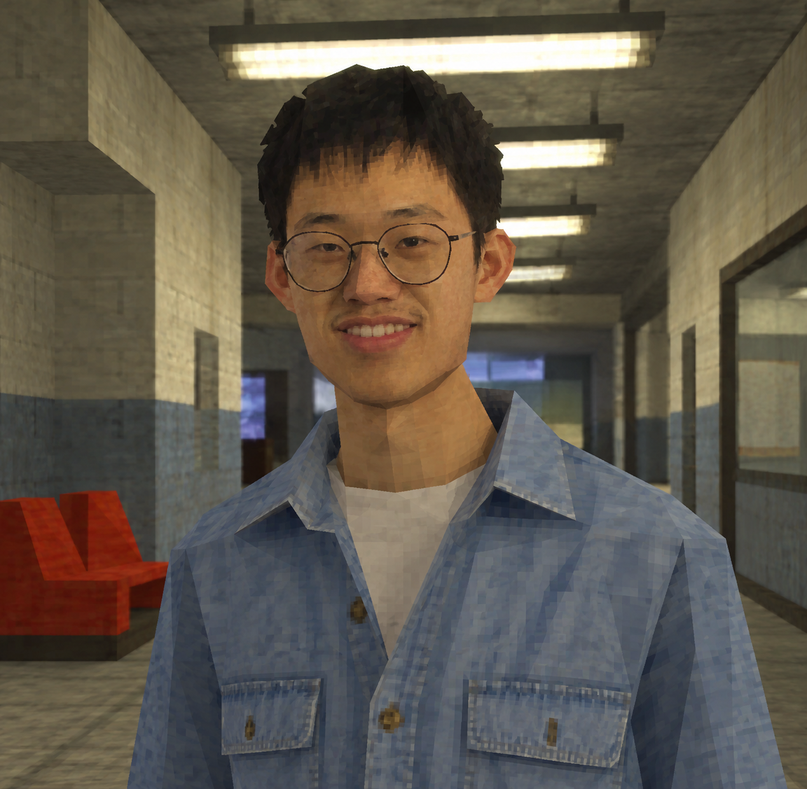
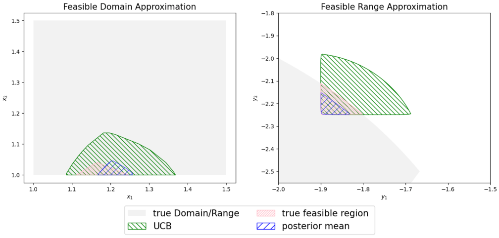
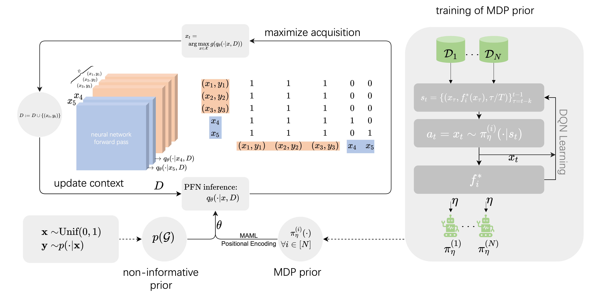

Diantong (点通) Li

Welcome! I am Diantong, a first-year PhD student in Computer Science at The University of Chicago, previously an undergraduate student at The Chinese University of Hong Kong, Shenzhen.
- I enjoy creating things and Bouldering
- CV
- Tetris
Research Interest
My research focuses on data-driven decision-making under uncertainty (e.g., Bayesian Optimization), especially how we can apply them in many real-world problems such as drug discovery (e.g., penicillin, Covid, Cancer) or provide theoretical guarantees for their performance.
Research Projects
- COMBOO: Constrained Multi-objective Bayesian Optimization through Optimistic Constraints Estimation; Diantong Li, Fengxue Zhang, Chong Liu, Yuxin Chen; International Conference on Artificial Intelligence and Statistics (AISTATS), May 2025. paper

- None To Optima in Few Shots: Bayesian Optimization with MDP Priors; preprint highlighted in NeurIPS 2025 invited talk
